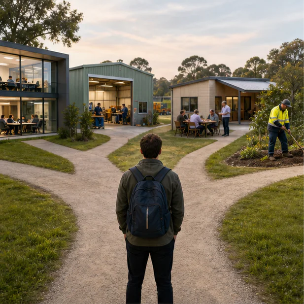

Stage 6 CEC · connected two-year course
Work Studies
Build the knowledge, judgement and evidence needed to navigate work, further learning and changing life commitments across Years 11 and 12.

How this course works
Learn, examine, check and keep evidence
Browser-local evidence
Your writing stays under your control
Work remains on this device until you deliberately export or print it. Saving is not submission.
One course, two connected years
Move through a coherent 240-hour candidate pathway
Year 11 candidate · 120 hours
Understand work and become application-ready
Core, workplace participation, job applications, communication, teamwork and a team enterprise project.
See the Year 11 mapYear 12 candidate · 120 hours
Manage commitments, money and workplace decisions
Work–life planning, personal finance, workplace issues, self-employment and experiencing work.
See the Year 12 mapCourse pathway
11 connected learning modules
The sequence protects official prerequisites and remains a source-safe school planning candidate until the final local pattern is confirmed.
Your teacher’s current notification is the authority. The Year 11 2026 schedule is source-backed. The current Year 12 assessment schedule and exact school delivery pattern must be checked against your teacher’s current instructions.